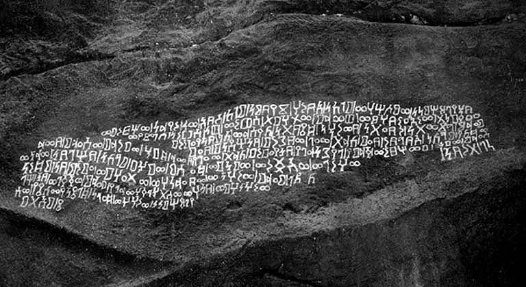
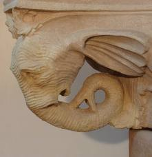

")
Muslims claim that:
- Allah sent flocks of birds, known as Ababeel, to attack the elephants of Abraha in response to a prayer by the Prophet Muhammad's grandfather, Abdul Muttalib. According to this belief, the birds' attack destroyed the elephants.
- And since no Pagan polytheist (of Muhammad's era) objected to the event, it confirms that this incident indeed happened and all people of that area were aware of this MIRACLE.
This event, believed to have taken place a year before the birth of the Prophet Muhammad (PBUH), is referred to as the "Year of the Elephant."
However, the reality is more nuanced:
- Surah Al-Fil does not explicitly state that it was Abraha who attacked the Kaaba; the Quran only recounts an ancient, vague story of divine punishment where birds are said to have destroyed a nation by throwing stones at them.
- The pagans during Muhammad's time did not challenge this story, as it was considered an old tale, similar to other well-known stories in the region, such as those of 'Ad and Thamud.
- No authentic Hadith clearly links Surah Al-Fil to Abraha's attack on the Kaaba.
(1) The Quran does not mention Abraha:
Surah Al-Fil only mentions that Allah sent birds against the army of elephants, which pelted them with stones and destroyed them. But:
- There is no mention of Abraha,
- And no mention of his attack on the Kaaba,
- Or no mention of Abdul Muttalib's prayer.
Please keep it in mind as this is a crucial point.
(2) There is not a single narration in Bukhari, Muslim, or the six authentic books regarding Abraha and the Kaaba:
There is no evidence in Bukhari, Muslim, or the six authentic books regarding the event described in Surah Al-Fil being related to Abraha and his attack on the Kaaba.
At most, this event is narrated under the name of the companion Ibn Abbas, but it has no authentic chain of narration.
If this great miracle indeed happened, then there would have been dozens of people witness to it instead of a singular person Ibn Abbas.
(3) Not a single pagan believed in prophethood of Muhammad due to this incident:
Had such an event with elephants truly occurred, the disbelievers would have embraced Islam immediately, just as Pharaoh's magicians fell into prostration upon witnessing the miracle of Moses.
The Meccan pagans repeatedly demanded that Muhammad perform a miracle to prove his prophethood. Yet, Muhammad never once cited the incident of Abraha as evidence of his prophethood. Instead, he often offered excuses for not performing miracles, such as claiming he was merely a messenger and not capable of miracles, or that previous peoples did not believe even after witnessing miracles. For more information, please read our detailed article:
Therefore, there is no record of a single pagan converting to Islam due to this supposed miracle involving elephants.
(4) There are numerous “contradictions” in the narratives about Abraha and the attack on the Kaaba. For example:
There are conflicting accounts regarding the number of elephants involved in the event. Some narrations claim there was an entire army of elephants, others mention 70 elephants, some say there were 9 elephants, while another version states there was only one elephant. The chief elephant is said to have been named "Mahmud," which raises doubts since it is unlikely that an African elephant would have an Arabic name like "Mahmud."
Additionally, there are discrepancies about the timing of the event. One account claims it occurred forty days before the birth of the Prophet Muhammad, another says fifty days, while other claims range from fifteen, ten, twenty-three, thirty, and even up to forty or seventy years before his birth.
For instance, Imam Fakhr al-Din al-Razi writes (link):
لم يكن بين عام الفيل ومبعث الرسول إلا نيف وأربعون سنة.
There was a gap of forty years and a few months between the Year of the Elephant and the Prophethood of the Prophet Muhammad (PBUH)."
(5) Historian Procopius did not mention an army of elephants in his biography of Abraha:
Historian Procopius of Caesarea was a famous Byzantine historian of the time who resided in Palestine. He documented the events of the time in several volumes, including detailed information about Abraha, but he did not mention any army of elephants. He did not describe the elephants' remarkable feat of traveling from Africa to Yemen, and then across deserts and mountains to Mecca, a distance of 500 miles. Link
Another issue is that according to Procopius and other historians, Abraha died about 25 years before the birth of the Prophet Muhammad, while Muslims believe that Abraha attacked in the same year the Prophet was born. Link
(6) The Improbability of a 500-Mile Desert Journey with Elephants:
Transporting elephants over a 500-mile desert journey is nearly impossible. There is no direct land route from Africa to Yemen that could have been used to bring elephants. Additionally, African elephants are known to be difficult to tame, unlike their Indian counterparts, which are more commonly trained for such purposes.
Another major issue is the elephants' diet; they require approximately 600 pounds of food and 60 gallons of water daily. The arid deserts and barren mountains along the route from Yemen to Mecca would not have provided sufficient water and forage for the elephants.
The distance from Yemen to Mecca is about 500 miles, a stretch so challenging that even horses would struggle to make the journey, let alone elephants. Elephants, being land animals with a high dependency on water, need to wet their skin at least once or twice a day to prevent it from drying and cracking. They typically coat their skin with mud to maintain moisture. Given these conditions, it is highly unlikely that an army of elephants could have traversed the 500 miles necessary to reach Mecca.
(7) Abdul Muttalib was an idolater:
Muslims try to make Abdul Muttalib a follower of the Hanif religion, but this is not possible because Abdul Muttalib was openly an idolater.
Abdul Muttalib drew lots with arrows in front of the Hubal idol to save Abdullah from sacrifice.
Even the Hadith of Bukhari is itself a proof that Abdul Muttalib was a Kafir.
Narrated Sa`id bin Al-Musaiyab from his father: When the time of the death of Abu Talib approached, Allah's Messenger (ﷺ) went to him and found Abu Jahl bin Hisham and `Abdullah bin Abi Umaiya bin Al-Mughira by his side. Allah's Messenger (ﷺ) said to Abu Talib, "O uncle! Say: None has the right to be worshipped but Allah, a sentence with which I shall be a witness (i.e. argue) for you before Allah. Abu Jahl and `Abdullah bin Abi Umaiya said, "O Abu Talib! Are you going to denounce the religion of `Abdul Muttalib?" Allah's Messenger (ﷺ) kept on inviting Abu Talib to say it (i.e. 'None has the right to be worshipped but Allah') while they (Abu Jahl and `Abdullah) kept on repeating their statement till Abu Talib said as his last statement that he was on the religion of `Abdul Muttalib (i.e. he was not a Muslim) and refused to say, 'None has the right to be worshipped but Allah.' (Then Allah's Messenger (ﷺ) said, "I will keep on asking Allah's forgiveness for you unless I am forbidden (by Allah) to do so." So Allah revealed (the verse) concerning him (i.e. It is not fitting for the Prophet (ﷺ) and those who believe that they should invoke (Allah) for forgiveness for pagans even though they be of kin, after it has become clear to them that they are companions of the fire (9.113).
(8) "Sabean Inscription" regarding Abraha deny these stories about Abraha:
An archaeological inscription on a rock in southern Saudi Arabia has been discovered, with its official English translation as follows: Link

"With the power of the Almighty, and His Messiah King Abraha Zeebman, the King of Saba'a, Zuridan, and Hadrmaut and Yemen and the tribes (on) the mountains and the coast wrote these lines on his battle against the tribe of Ma'ad (in) the battle of al-Rabiya in the month of "Dhu al Thabithan" and fought all of Bani A'amir and appointed the King Abi Jabar with Kinda and Al, Bishar bin Hasan with Sa'ad, Murad, and Hadarmaut in front of the army against Bani Amir of Kinda. and Al in Zu Markh valley and Murad and Sa'ad in Manha valley on the way to Turban and killed and captured and took the booty in large quantities and the King and fought at Halban and reached Ma'ad and took booty and prisoners, and after that, conquered Omro bin al-Munzir. (Abraha) appointed the son (of Omro) as the ruler and returned from Hal Ban (halban) with the power of the Almighty in the month of Zu A'allan in the year sixty-two and six hundred."
This text completely refutes the Muslim claim that Abraha was turned into a heap of straw by the birds. On the contrary, this text shows that:
- Abraha attacked various tribes in Arabia, advancing far while collecting booty and slaves from every place, and safely returned to his country. He did not turn into a heap of straw on the way.
- In this text, there is no mention of elephants, birds, Quraysh, the Kaaba, Abraha's defeat, or Abraha turning into straw after being pelted by stones.
- Furthermore, according to this text, the attack of the elephants and the birth of the Prophet of Islam did not occur in the same year.
This archaeological evidence directly disproves the Muslim claim. Muslims have no answer to this.
(9) Surah Al-Fil could refer to any ancient tribe
Just as the stories of 'Aad and Thamud were widely known among the Arabs, it's possible that another tribe, known for its association with elephants, had a similar story that spread throughout the region. This could explain why the Pagans did not object to the message in Surah Al-Fil.
The Pagans of that time lacked the scientific knowledge and critical thinking necessary to challenge these ancient tales. They accepted these stories without questioning their validity.
Additionally, some people, in light of modern archaeological discoveries, suggest that Surah Al-Fil might actually refer to the people of Thamud.
Surah Al-Fil begins with the verse:
أَلَمْ تَرَ كَيْفَ فَعَلَ رَبُّكَ بِأَصْحَـٰبِ ٱلْفِيلِ
“Did you not see how your Lord dealt with the companions of the elephant?”
This phrasing is similar to that used in reference to the people of 'Aad:
أَلَمْ تَرَ كَيْفَ فَعَلَ رَبُّكَ بِعَادٍ
“Did you not see how your Lord dealt with the people of 'Aad?”
After the people of 'Aad, the Prophet Saleh appeared in their region, and the Thamud civilization emerged, constructing buildings in the mountains. During excavations in 1921 in the region of "Petra," an elephant head was discovered among the columns of the Royal Court building, indicating that this tribe might have considered elephants a symbol of power and held them in high regard. (link).

The rock with the elephant in Petra (link):
This suggests that the people of Thamud may have viewed elephants as symbols of power and wealth. Therefore, it is possible that the "People of the Elephant" mentioned in Surah Al-Fil were actually the people of Thamud.
Another significant point is that the Prophet Saleh was sent to the Thamud people, who rejected him and sought to test his prophethood. As a result, Allah sent a punishment that destroyed them. This further indicates that Surah Al-Fil could be referring to the people of Thamud, with the birds throwing stones at the "People of the Elephants."
The Quran presents different accounts of how the punishment came to the people of Saleh. One verse describes it as an earthquake, while another, seemingly contradictory verse, states that a terrible sound from the sky turned them into a heap of straw.
(Quran 7:78) So an earthquake seized them, and they lay fallen in their homes in the morning.
(Quran 54:31) Verily, We sent upon them a single mighty blast, and they became like dry stalks of palm-trees destroyed.
Since the Quran describes punishment in different ways, such as through earthquakes or a terrible sound, it could also portray punishment through a flock of birds. Because these stories of punishment are largely mythical and lack evidence, people could narrate any story without being refuted, leading to widespread belief in such tales.
It is possible that when the Quran was revealed, the pagans might have understood "the people of the elephant" to refer to the Thamud.
Alternatively, the pagans may have had a similar story about another ancient tribe, also associated with elephants, that was famously destroyed by birds throwing stones. This would explain why the Quraysh did not object to the narrative in Surah Al-Fil.
Natural disasters like earthquakes, volcanoes, or storms might have occurred in the region, and Allah’s name was often attributed to these events as a form of divine punishment. The people of that time, due to their ignorance, were not equipped to challenge these claims. However, today, science has thoroughly debunked such claims attributed to Allah.
(10) Why Didn’t Allah Intervene When There Were 360 Idols in the Kaaba? And What About the Destruction of the Kaaba After Muhammad?
The Kaaba, considered the house of Allah, once housed 360 idols that were worshipped alongside Him. How did Allah’s zeal allow the greatest sin, "shirk," to be committed in what is deemed the most sacred place in the universe?
Would a Muslim ever tolerate the opening of a brothel in a mosque? Did Allah, perhaps, favor the naked circumambulation of men and women so much that He went to great lengths to protect it?
After the advent of Islam, all the idols were destroyed, yet the Kaaba was attacked several times afterward. Notable among these were the attack by Hajjaj bin Yusuf and the upheaval caused by the Qaramita, who even removed the Black Stone. Why didn’t any birds come to strike down these wrongdoers? This suggests that the birds that supposedly protected the Kaaba earlier did not act on Allah's command but rather due to the blessings of the idols.
Recently, a crane fell on pilgrims at the Kaaba, and Allah did nothing. Not a single bird, not even a fly, intervened.
All these so-called miracles appear to be nothing more than fantasy stories. Why do these miracles always seem to occur when there are no witnesses? And why, in today’s world, does Allah not perform any miracles in front of everyone?